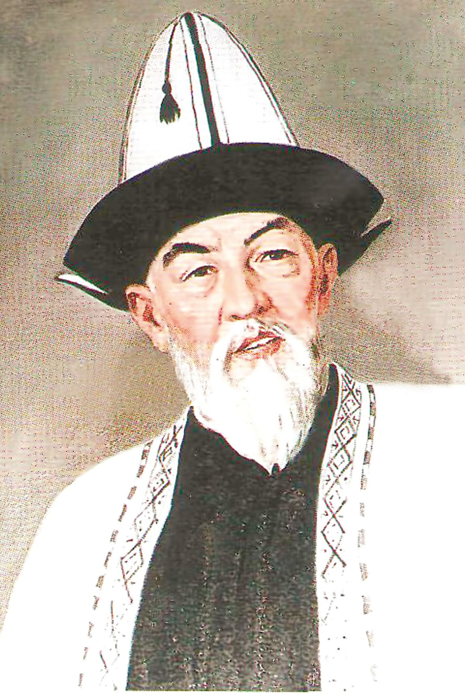
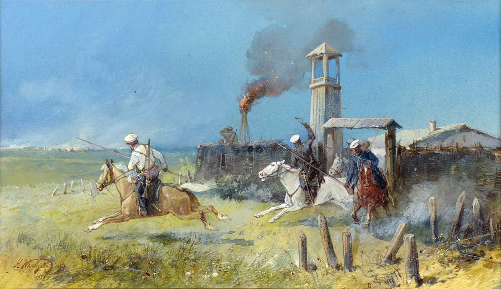
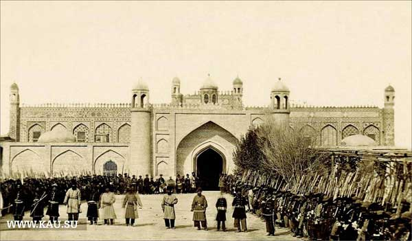

Биография
Шабдан Джантаев родился 29 октября 1839 года в племени Сарыбагыш
на территории нынешнего Кеминского района Киргизии в семье Джантая
Карабекова, манапа (феодального правителя) сарыбагышских киргизов
и потомка знаменитого Атаке-батыра. С ранних лет отец готовил
Шабдана на роль своего будущего преемника, воспитывая его в
согласии с моральными принципами степных кочевников, к коим
относились преданность людям, усердие, честь, военная храбрость, и
уважение к окружающей среде.


В 1860 году Шабдан Джантаев в составе войска Канаат-Ша участвовал
в Узун-Агачском сражении против русской армии. В этом бою кокандцы
потерпели поражение, а Шабдан впервые воочию увидел превосходство
армии и оружия русского государства. Эта битва практически
положила конец правлению кокандских феодалов в северной части
Киргизии. Оставаясь ещё при ханском дворе, весной 1862года Шабдан
принял участие в обороне Ташкента от мятежников. Его храбрость,
смелость и решительность при боевых действиях были замечены, и
Кокандский хан назначил Шабдана беком г. Азрети-Султан (г.
Туркестан), а народ стал называть его Шабдан батыр.
В местности Кетмень-Тюбе, в районе бывших кочевий саякского манапа
Осмона Тайлакова, Загряжский с переводчиком и писарем отделился от
основного отряда и отправился в ближайший аил. Несмотря на
настойчивое предложение Шабдана взять с собой нескольких воинов,
майор отказался, сославшись на безопасное расстояние относительно
Коканда — ближайшего врага российских властей. Однако опасность
представляли не кокандцы, а подстрекаемый британцами кашгарский
правитель Якуб-бек, и перешедший на его сторону Осмон Тайлаков.
Опасения Джантаева подтвердились: в первую же ночь люди Якуб-бека,
ведомые Тайлаковым, устроили облаву на спящих русских. Юрта
Загряжского, где хранились подарки, предназначенные для волостных
старшин, была разграблена, а сам уездный начальник чудом остался
жив, укрывшись в лесу. Когда Шабдану доложили о случившемся, он
незамедлительно отправился на помощь Загряжскому и к рассвету
настиг отряды Тайлакова, обратив их в бегство.
